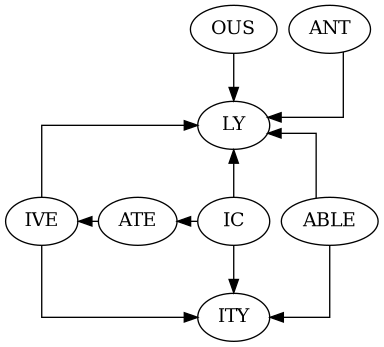

The Romance languages have a wealth of different i-suffixes (*) among the verb forms, and relatively few for the other parts of speech. In addition to this, many verbs exhibit irregularities. Many also have short stems, leading to dangers of over-stemming. The verb, therefore, tends to dominate initial thinking about stemming in these languages.
An algorithmic stemmer can usually reduce the multiple forms of a verb to at most two or three, and often just one. This is probably adequate for standard IR use, where the verb is used rather less than other parts of speech in short queries.
In French the verb endings ent and ons cannot be removed without unacceptable overstemming. The ons form is rarer, but ent forms are quite common, and will appear regularly throughout a stemmed vocabulary.
In Italian, the final vowel of nouns and adjectives indicates number and gender (amico is male friend, amica is female friend) and its removal is a necessary part of stemming, but the final vowel sometimes separates words of different meanings (banco is bench, banca is bank), which leads to some over-stemming.
The d-suffixes of all four languages follow a similar pattern. They can be tabulated as follows,
| French | Spanish | Portug. | Italian | |||||||
| noun | ANCE | ance | anza | eza | anza | |||||
| adjective | IC | ique | ico | ico | ico | |||||
| noun | ISM | isme | ismo | ismo | ismo | |||||
| adjective | ABLE | able | able | ável | abile | |||||
| adjective | IBLE | - | ible | ível | ibile | |||||
| noun | IST | iste | ista | ista | ista | |||||
| adjective | OUS | eux | oso | oso | oso | |||||
| noun | MENT | ment | amiento | amento | mente | |||||
| noun | ATOR | ateur | ador | ador | attore | |||||
| noun | ATRESS | atrice | - | - | atrice | |||||
| noun | ATION | ation | ación | ação | azione | |||||
| noun | LOGY | logie | logía | logía | logia | |||||
| noun | USION | usion | ución | ución | uzione | |||||
| noun | ENCE | ence | encia | ência | enza | |||||
| adjective | ENT | ent | ente | ente | ente | |||||
| noun | ANCE | ance | ancia | ância | anza | |||||
| noun | ANT | ant | ante | ante | ante | |||||
| adverb | LY | (e)ment | (a)mente | (a)mente | (a)mente | |||||
| noun | ITY | ité | idad | idade | ità | |||||
| adjective | IVE | if | ive | ivo | ivo | |||||
| verb | ATE | at | at | at | at |
Equivalent English forms are shown in upper case. In English, ATE is a valid ending, but in the Romance languages it only exists in combinations. The endings can appear in a number of styles. In Italian, oso can also be osa, osi or ose, French ique becomes ic in combinations.
The important combining forms are summarised in the following picture:
In English, ABLE combines with LY to form ABLY. So in French, for example, able combines with (e)ment to form ablement. In some languages particular combinations are rare. In Italian, for example, ANT + LY, which would be the ending antemente, is so rare that it does not figure in the stemming algorithm. According to the picture, we should encounter the forms ICATIVELY and ICATIVITY, and dictionaries instance a few English words with these endings (communicatively for example). But in practice three is the maximum number of derivational suffixes that one need consider in combination.